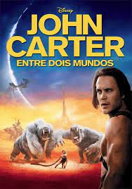
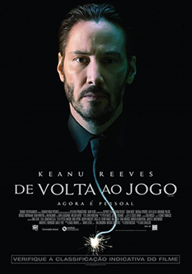
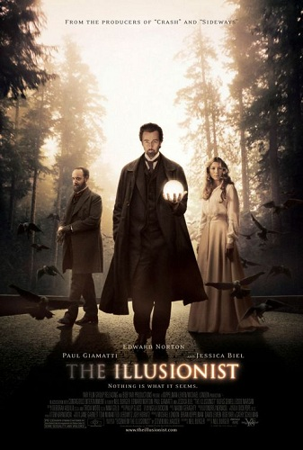

Sinopse:
O soldado americano John Carter, para a tristeza de seus parentes, faleceu no planeta Terra. Contudo, para a alegria de outros,
ressuscitou em Marte. Agora, em meio a uma guerra civil no planeta vermelho, habitado por seres de cor verde e criaturas gigantescas, ele é visto
como a única esperança de ajudar a princesa Deja Thoris a salvar o seu mundo, numa batalha que mudará para sempre o seu destino.
John Wick - De Volta ao Jogo

Sinopse:
John Wick já foi um dos assassinos mais temidos da cidade de Nova York, trabalhando em parceria com a máfia russa. Um dia, ele decide se aposentar,
e neste período tem que lidar com a triste morte de sua esposa. Vítima de uma doença grave, ela já previa a sua própria morte, e deu de presente
ao marido um cachorro para cuidar em seu período de luto.
O Ilusionista

Sinopse:
O famoso ilusionista Eisenheim assombra as platéias de Viena com seu impressionante espetáculo de mágica. Suas apresentações
despertam a curiosidade de um dos mais poderosos e céticos homens da Europa, o Príncipe Leopold. Certo de que as mágicas não
passam de fraudes, Leopold vai ao show de Eisenheim disposto a desmascará-lo. Quando Sophie, noiva de Leopold, é chamada ao
palco para participar de um número, ela reconhece em Eisenheim uma paixão juvenil. Eles iniciam um romance clandestino e o príncipe delega
a um inspetor de polícia a missão de expôr a verdade por trás do trabalho do mágico. Este, no entanto, prepara-se para
executar a maior de suas ilusões.
Truque de Mestre
Sinopse:
Em Truque de Mestre, acompanhamos Daniel Atlas, o carismático líder do grupo de ilusionistas chamado The Four Horsemen. O
que poucos sabem é que, enquanto encanta o público com suas mágicas sob o palco, o grupo também rouba bancos em outros continentes e ainda
por cima distribui a quantia roubada nas contas dos próprios espectadores. Estes crimes fazem com que o agente do FBI Dylan Hobbs
esteja determinado a capturá-los de qualquer jeito, ainda mais após o grupo anunciar que em breve fará seu assalto mais audacioso. Para tanto
ele conta com a ajuda de Alma Vargas, uma detetive da Interpol, e também de Thaddeus Bradley, um veterano
desmistificador de mágicos que insiste que os assaltos são realizados a partir de disfarces e jogos envolvendo vídeos.
Um Sonho Possível
Sinopse:
Michael Oher era um jovem negro, filho de uma mãe viciada e não tinha onde morar. Com boa vocação para os esportes, um dia ele foi
avistado pela família de Leigh Anne Tuohy, andando em direção ao estádio da escola para poder dormir longe da chuva. Ao ser
convidado para passar uma noite na casa dos milionários, Michael não tinha ideia que aquele dia iria mudar para sempre a sua vida, tornando-se mais
tarde um astro do futebol americano.